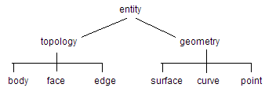

| |
Kernel Interface Driver (KID) - an Overview |
| Chapters | LISP in KID >>> |
This manual, for the Kernel Interface Driver (KID), is for programmers who wish to use KID to drive PARASOLID. It assumes knowledge of the kernel interface (KI) and the PK interface, LISP, and modeling in PARASOLID, though some basic elements are explained in the following chapters.
Throughout this manual, the notation
-->
is used in examples to indicate when information is returned by a call.
KID is recommended as an introduction to Parasolid which enables you to quickly create solid objects, manipulate and display them.
A command is a complete LISP expression, enclosed in brackets, which is read in and evaluated by the driver.
The LISP interpreter is implemented in C and is included within the supplied executable image of KID.
The programming language LISP, or "LISt Processing language", is one of the oldest programming languages, dating from 1960. Though primarily intended for symbolic processing with applications in artificial intelligence, algebraic computation and theorem proving, in KID it is used as a general purpose interface.
LISP is highly interactive and is thought of as an interpreter as it evaluates symbolic expressions, or s-expressions, which you pass to it. You do not need to compile or link LISP programs.
The language supports a range of programming styles from "Fortran with brackets" to functional programming. Modern implementations are very complex and different from one another.
PARASOLID LISP is provided with a set of standard functions.
KID is supplied with its own graphical system and device drivers. Functions are available to render items from the kernel in a number of ways. Picking from the screen is used extensively as a method of selection.
It is possible to roll back the kernel via KID functions. A rollmark can be set at the beginning of each command or sequence of commands. If a command fails to complete successfully, the kernel can then be rolled back to the state it was when the rollmark was set.
It is not possible to roll back the driver. After a kernel rollback, the driver and the kernel may be inconsistent.
The on-line help often provides a convenient way of finding out about objects in KID. It provides information about an object and its properties.
In any object oriented programming environment, an object is used to represent a collection of data and functions. An object can be used to represent a real thing or an abstract idea.
Objects in KID are arranged in a pre-defined class structure and an object can own other sets of objects. An owning object is referred to as a class. The objects in a class represent the same kind of component, e.g. bodies, faces.
Figure 1-1 Class tree structure (objects owning objects)
All the information concerning an object, including the functions necessary to manipulate it, are kept within the object. PARASOLID LISP has been extended by the inclusion of object oriented functions and these are used extensively within KID.
An item exists as a tagged (i.e. uniquely numbered) entity in the kernel. It has a tag which may or may not be known about by KID.
> (define f1 face) -- define f1 as a member of the face class > (f1 pick) -- pick is a function inherited by the object face and enables a cursor pick from a model drawing. |
Objects are used to refer to an item in the kernel. Only an object in a class below the entity class may refer to an item in this way. An object may refer to more than one item.
One of the main tasks of KID is to maintain the correspondence between items and objects.
Before an item can be created by the kernel it is necessary to supply data to define it. This data is stored in one of the classes below the primitive class. The data may simply be a set of geometric data (point, direction, radius, etc.) or it may also include the names of existing objects.
Most primitive classes have a corresponding create function, their names are usually the name of the type of entity which is created preceded by p_.
The tag of an object is one of its properties. This property can be one of the following:
All communication with the kernel interface is via tags, so you use an object which refers to an item to perform a kernel function on the item.
Objects which refer to items which have been deleted, for example after a rollback, contain dead tags. Some caution should be exercised in this case, and "undefine" used to remove the dead object. It is possible that a dead tag may be unintentionally passed to the kernel. This is always trapped by the kernel and an ifail error message returned.
Missing mandatory parameters give an error to the user.
To rectify you should repeat the KID command after first setting the properly named parameter on the object. For example:
> (define b0 p_cone) > (b0 lrad 10; height 20; create) --> "b0 should first have parameter urad specified" ...(followed by lisp error 42) > (b0 urad 2; create) |
The majority of object functions use predefined properties of the object as their arguments. Some functions use both predefined properties and a single argument given at the time of the call, for example:
> ( <object> transmit `<file_name>) |
To run the KID program, for example, on VMS platform, type:
$ run PARASOLID:kid.exe
where PARASOLID is a logical name defining the pathname to kid.exe.
When the program is ready the
>
prompt is shown:
restore: finished in 2.149999999999s *** KID version >v60< switch to journal file kid.jou > |
For further information on running KID on all supported platforms, see Chapter 5, "Using Parasolid", of the Installation Notes.
To terminate a KID session type:
> (quit)
| Chapters | LISP in KID >>> |